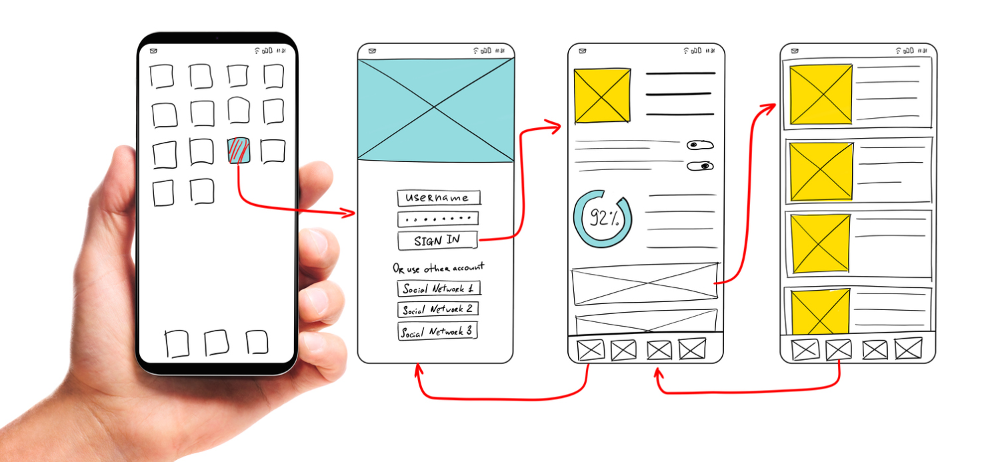
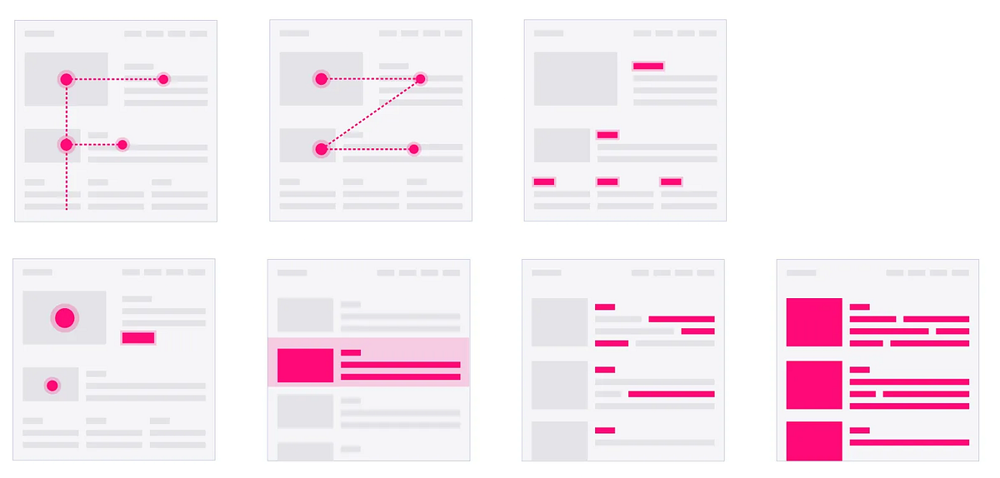
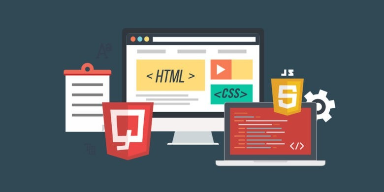

Com o avanço constante da tecnologia, empresas passaram a perceber que não basta apenas oferecer sistemas funcionais. A organização visual e a experiência do usuário se tornaram fatores essenciais para manter plataformas mais intuitivas, acessíveis e agradáveis para o público.
Especialistas da área de desenvolvimento destacam que a forma como informações são distribuídas na tela influencia diretamente na navegação dos usuários. Elementos desalinhados, excesso de conteúdo e falta de separação visual podem dificultar a leitura e comprometer a experiência dentro de sites e aplicações.

O design moderno busca justamente melhorar essa organização por meio de blocos de conteúdo, áreas destacadas e componentes bem definidos. Em muitos portais digitais, caixas informativas e seções separadas ajudam os usuários a identificar rapidamente os assuntos mais importantes da página.
Além da aparência, o espaçamento entre elementos também ganhou importância nos últimos anos. Margens, divisões visuais e áreas de respiro passaram a fazer parte das estratégias utilizadas para tornar a leitura mais confortável em diferentes dispositivos.

Outro ponto frequentemente discutido por desenvolvedores é a adaptação dos componentes visuais dentro dos layouts. Plataformas modernas precisam manter uma estrutura organizada mesmo quando recebem novos elementos, imagens ou diferentes tamanhos de conteúdo.
Para evitar problemas de alinhamento e quebra de layout, profissionais utilizam técnicas que ajudam a controlar o tamanho e o comportamento visual dos componentes da página. Isso permite que os elementos permaneçam equilibrados e melhor distribuídos durante a navegação.

A experiência visual também influencia diretamente no tempo de permanência dos usuários em plataformas digitais. Interfaces confusas ou desorganizadas tendem a afastar visitantes, enquanto páginas mais limpas e bem estruturadas facilitam a interação e aumentam o engajamento.
Segundo especialistas, a tendência é que o desenvolvimento front-end continue priorizando não apenas desempenho, mas também organização visual, acessibilidade e usabilidade em projetos cada vez mais modernos.